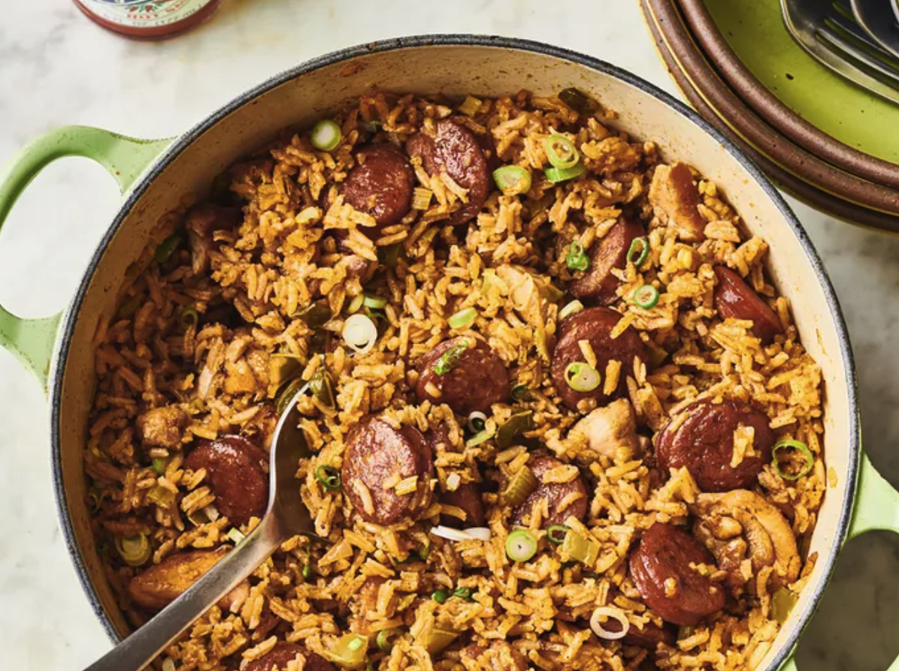

New Orleans Creole Gumbo Recipe

A spicy jambalaya with chicken, andouille sausage, rice,
and Cajun seasonings that's easy to make in one pot.
Ingredients
- Oil
- Sausage
- Chicken
- Spices and seasonings
- Vegetables
- Rice
- Broth
Steps
- Gather all ingredients
- Heat 1 tbsp of peanut oil in a large heavy dutch oven over medium heat. Season sausage and chicken pieces with cajun seasoning. Sauté sausage until browned. Remove with slotted spoon, and set aside
- Add 1 tbsp peanut oil, and saute chicken pieces until lightly browned on all sides. Remove with a slotted spoon, and set aside.
- In the same pot, saute onion, bell pepper, celery, and garlic until tender
- Stir in crushed tomatoes, and season with red pepper, black pepper, salt, hot pepper sauce Worcestershire sauce, and file powder
Home